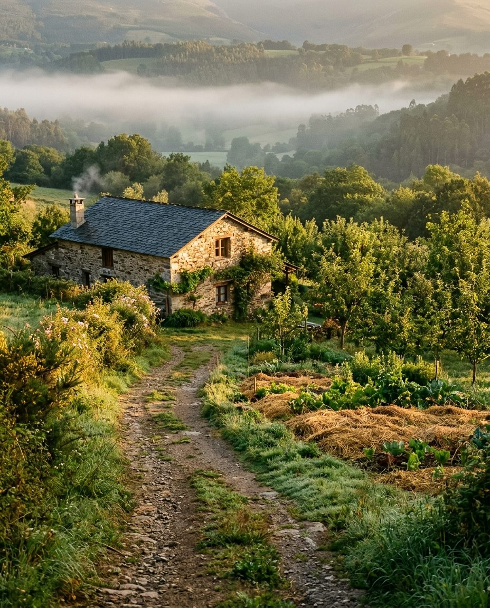
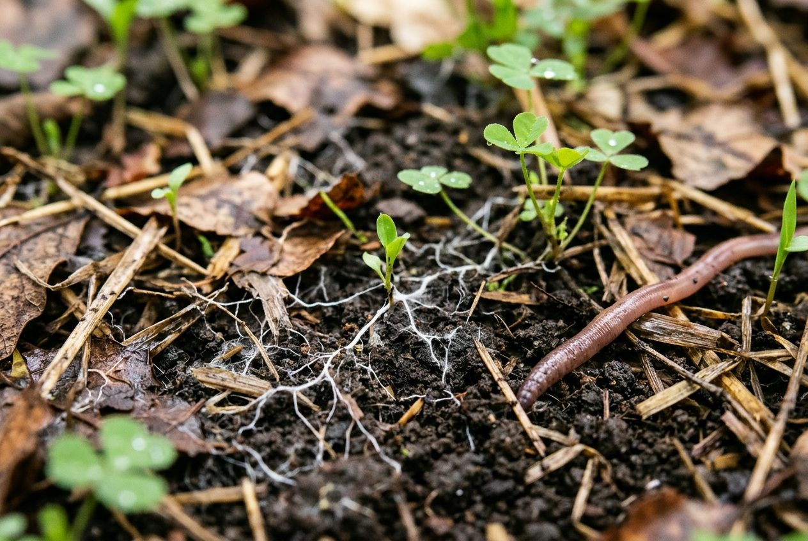
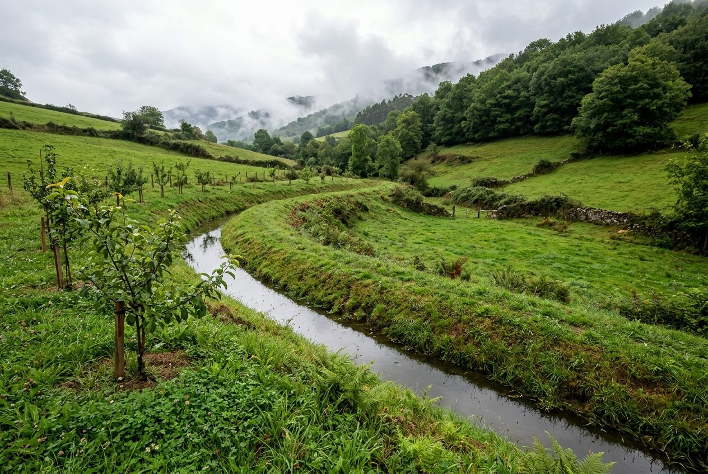
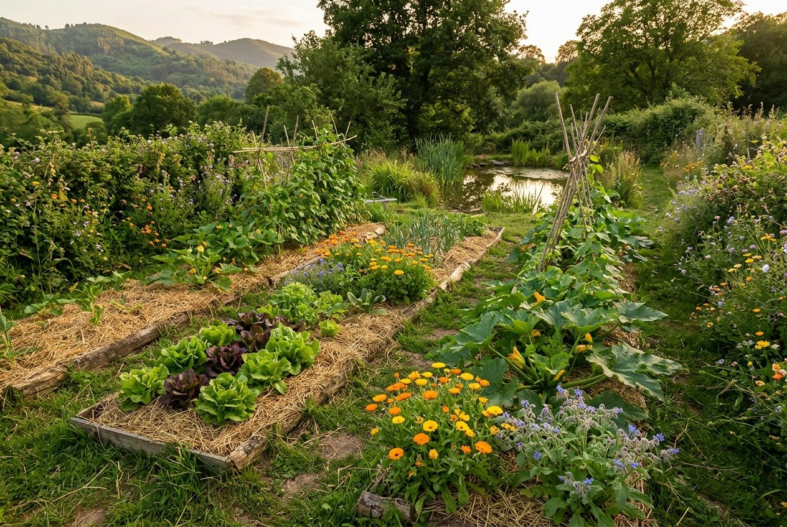
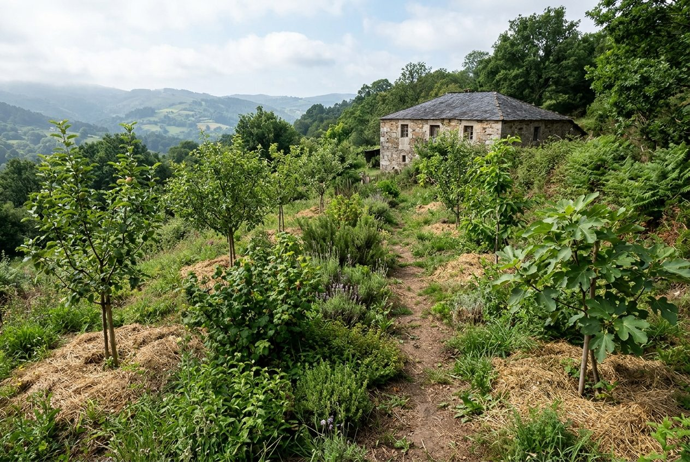

Asesoramiento agroecológico
Antes de plantar, conviene entender la tierra.
Acompañamos a quien ha comprado una finca, o está a punto de hacerlo, y quiere que produzca alimento sin agotar el suelo, el agua ni a las personas que la trabajan.
La agroecología parte de algo sencillo: cada terreno tiene su suelo, su agua, su clima y su historia, y el diseño sale de ahí. Un huerto en Asturias no se parece a uno en Cáceres. Copiar el de un vídeo suele acabar en bancales secos y un cobertizo lleno de herramientas sin usar.
- Estás mirando un terreno y quieres saber qué se puede hacer en él antes de firmar.
- Ya tienes la finca y no sabes por dónde empezar.
- Plantaste y algo no va: el suelo se encharca, los frutales no arrancan o el huerto da más trabajo del que esperabas.

Imagen ilustrativa generada con IA.

Imagen ilustrativa generada con IA.
El suelo
Lo primero que se mira, y lo último que se suele cuidar.
Un suelo vivo retiene agua, alimenta las raíces y aguanta mejor el calor y las lluvias fuertes. Se construye con cobertura permanente, aporte de materia orgánica y el menor laboreo posible.
Antes de proponer nada tomamos muestras, abrimos una calicata para ver la estructura y miramos qué crece solo. Las plantas espontáneas cuentan mucho de cómo está la tierra.

Imagen ilustrativa generada con IA.
El agua
Cada litro que se queda en la finca es uno que no hay que bombear.
En muchas fincas el agua llega de golpe y se va rápido. Con zanjas en curva de nivel, balsas pequeñas, acolchados y vegetación bien colocada se frena, se infiltra y se guarda en el propio suelo.
Ajustamos la solución a la pendiente y a la lluvia de la zona. También te decimos qué permisos de aguas hacen falta en tu comunidad, porque una balsa sin licencia puede salir cara.

Imagen ilustrativa generada con IA.
El huerto
Un huerto del tamaño de tu tiempo.
El error más común es hacerlo demasiado grande. Empezamos por las horas a la semana que de verdad puedes dedicarle y diseñamos desde ahí.
Bancales acolchados, flores entre las hortalizas para atraer polinizadores y fauna útil, rotaciones simples y un calendario que no te haga abandonar en agosto.

Imagen ilustrativa generada con IA.
Bosques de alimentos
Tarda en dar, y luego da con poco trabajo.
Se plantan a la vez árboles frutales, arbustos de fruto, hierbas, cubresuelos y trepadoras, de modo que cada capa aproveche lo que deja la anterior. Elegimos las especies para tu clima y tu suelo, no para un catálogo.
Los primeros años piden riego, acolchado y paciencia. Hay cosechas rápidas, como aromáticas y frutos pequeños, que sostienen el ánimo mientras crecen los árboles, y cosechas de fondo que llegan pasados unos años.
No lo vendemos como un huerto que se cuida solo. Al principio da trabajo, y bastante.
Qué incluye
Seis áreas de trabajo, un solo plan.
Se pueden contratar juntas o por separado, según en qué punto esté tu finca.
Lectura del terreno
Pendiente, orientación, suelo, vegetación espontánea, agua disponible y vientos. Con eso se decide qué va dónde.
Suelo vivo
Observación en campo, abonos verdes, acolchados y compost. Menos laboreo y más materia orgánica.
Gestión del agua
Captación de lluvia, zanjas de infiltración, balsas y riego eficiente, con el trámite que corresponda.
Huerto agroecológico
Bancales, rotaciones, asociaciones y setos de flor, dimensionados a las horas que puedes dedicarle.
Bosque de alimentos
Frutales, arbustos, hierbas y cubresuelos en capas. Se diseña pensando en el año diez, no en el primero.
Biodiversidad y manejo
Setos, charcas, refugios para fauna útil y un calendario de tareas realista para cada estación.
Cómo es una asesoría
Primero miramos, después proponemos.
El alcance y la duración dependen de la finca y de lo que quieras hacer en ella. Lo acordamos por escrito antes de empezar.
Una primera conversación
Nos cuentas qué finca tienes o cuál estás mirando, qué quieres sacar de ella y cuánto tiempo puedes dedicarle. Es gratuita y sin compromiso.
Visita al terreno
Recorremos la finca contigo. Miramos suelo, agua, pendiente, vegetación y accesos, y tomamos las muestras necesarias.
Diagnóstico y plan por fases
Recibes un documento claro con lo que hay, lo que conviene hacer primero y lo que puede esperar, ordenado según tu presupuesto.
Acompañamiento
Resolvemos dudas durante la puesta en marcha y volvemos en las épocas clave para ajustar lo que haga falta.
Empezamos por aquí
¿Tienes una finca, o estás mirando una?
Cuéntanos dónde está y qué te gustaría hacer.
La primera conversación es gratuita y sin compromiso. Te decimos con claridad qué es posible en tu terreno y cuánto trabajo lleva, antes de que gastes un euro en plantas.